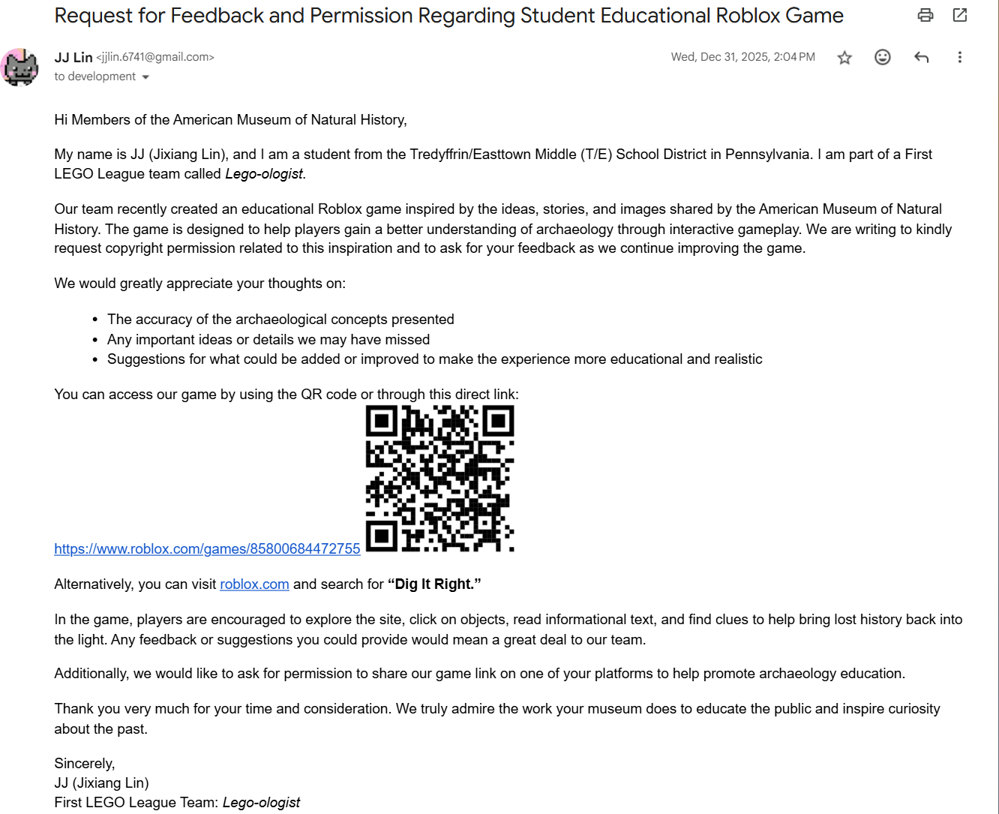
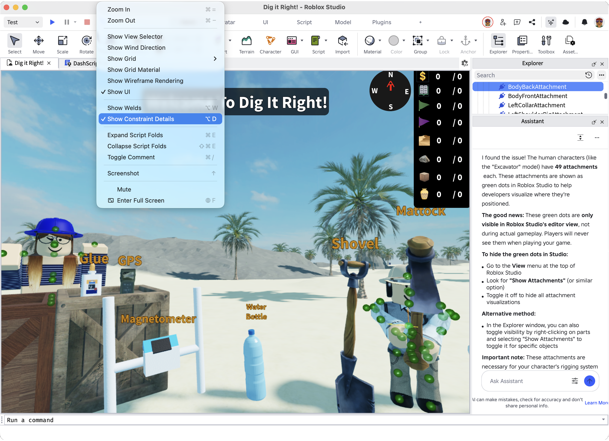

Link: We sorted our tasks by importance. Then team members selected items based on interest
Link: We have been using our website to explain and QR code to share our game
Link: Yes, a lot of improvements after sharing
Link: Yes, 114 friends and classmates played our game
Link: We have a lot of game items and assets to develop. First Team members selected items based on interest
Link: We value team members' game items and assets online every Tuesday and Thursday. Thumb up great work while discussing imperfections that can be improved using Roblox Live Collaborators feature
Link: Our game is the first Roblox game that practices real archaeology
Link: Our game is the first Roblox game that practices real archaeology
Link: We have 3 roles: Excavator, Analyst, Recorder like a real field crew in our prototype
Link: they provide more realistic excavation experience and more engaging and educational gameplay
Link: It helps correct common archaeology misconceptions by transforming archaeology education for kids
Link: Share our games with others and see it help correct common misconceptions about archaeology with high rating and more visits
Link: With great rating, I am very proud to make the first Roblox game to practice real archaeology
Link: Archaeologists of the American Museum of Natural History, because we make a Roblox version of their game and render the archaeology process more entertaining. In fact, I wrote an email to me and received positive feedback from a phone call:

Link: The next level of our game: Artifact Lab, fulfilling the Analyst role
Link: Yes, we met every Tuesday and Thursday using Roblox Live Collaborators to improve our features and address players' feedback. As a result of this process, we currently already have 700+ Roblox versions.
Link: The Magnetometer ground penetrating effect. It is the most challenging task, taking me more than 2 weeks to perfect. However, after all being working, I feel very proud of it, especially seeing it is enabled by players.
Link: Whenever I got stuck for long and AI Assistant or ChatGPT still couldn't help. I reached to our coach. He could always provide me a right direction to figure out issues and solutions by myself.
Link: We voted democratically and respected the final decision as described in our Design Process
Link: Creating the ground penetrating effect using Magnetometer. The Roblox AI Assistant couldn't provide a satisfying solution. In the end, I resorted to our mentor to help sort out the working script. Here is an example iterate with AI, it was successful like most of the time.
